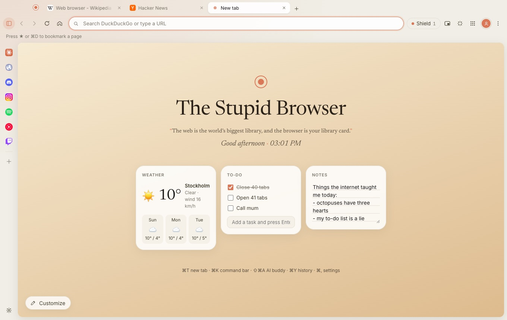
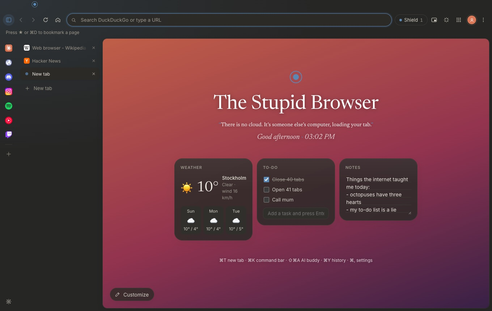

A stupid name for a really good browser.
It blocks ads, puts idle tabs to sleep and keeps your history on your own computer. It’s free, there’s no account, and it works on Mac, Windows and Android.


Lighter than Chrome, once idle tabs sleep.
Tabs you haven’t looked at in a while fall asleep. They stay where they are and wake up the moment you click them, while your computer gets its memory back. Tabs playing music or video stay awake.
Measured in The Stupid Browser for Mac with the same five sites as the test below: about 1,850 MB with every tab awake, 690 MB with the idle ones asleep. Chrome used about 1,100 MB.
We tested it against Chrome.
The Mac version runs on Safari’s engine, WebKit, which is what lets you sign in to Google. It scores the same as WebKit on its own, so the browser adds nothing on top. On Windows it runs Chrome’s engine.
Tested on 18 October 2026 on a MacBook Air with an M4 chip and 16 GB of memory, The Stupid Browser 1.4.1 against Chrome, each with a fresh profile and its window on screen. Sites: Wikipedia, YouTube, Reddit, GitHub and The Verge, measured a minute after opening. Memory is the total of all the browser’s processes, measured with Apple’s footprint tool (average of two runs). Speedometer scores are the average of several runs and vary by about ±1.5.
Everything else you’d want, and nothing you wouldn’t.
Shield
Ads and trackers are blocked before they load, and the ads inside Google, Bing and DuckDuckGo results are hidden too. Pages get lighter and nobody follows you from site to site.
Buddy
Your own AI helper that can read the tab you’re on. Highlight any text, click Ask Buddy (or whatever you named it), and ask away. Works with Claude, ChatGPT, Gemini or Ollama.
Rewind
Find that page from Tuesday by what it looked like or said. It’s off until you turn it on, and it stays on your computer.
Make it yours
Widgets, backgrounds, your own quotes on the new tab, any accent color, and Arc-style vertical tabs if that’s your thing.
Bring your stuff
Move your bookmarks, history and passwords over from the browser you use now. Nothing changes in the old one.
Music island
When music plays in a tab you’ve left, a small pill floats up with play, pause and skip. Click it to jump back.
Private by default
No tracking, no analytics, no account, and nothing to sell: the browser doesn’t send anything about you to us or anyone else. Your history, bookmarks and passwords stay on your computer. On its own it only checks GitHub for updates, loads each site’s own icon, and gets the weather if you add that widget.
And the small stuff
Tab groups, split view, pinned tabs and reopening closed ones. WhatsApp, Discord and Spotify in the sidebar. Private windows, a password manager, separate profiles, DuckDuckGo by default and 13 other search engines, a sound equalizer for headphones, and updates that install themselves.
Tabs are like snacks: one more won’t hurt. (It will.)
Get it. It’s free.
Pick your computer or phone. No sign-up, no email, no catch.
Mac
macOS 13 or newer · Apple chip and Intel
One download for every Mac.
First time opening it
Drag it into Applications and open it. macOS asks once because the app isn’t from the App Store: go to System Settings → Privacy & Security and click Open Anyway. Already using an older version? It updates itself, and your bookmarks, history and passwords come along.
Windows
Windows 10 or 11, 64-bit
If Windows says “Windows protected your PC”, click More info, then Run anyway.
Android
Android 8 or newer, about 1.5 MB
Open the file on your phone. Android asks once to allow installs from your browser, which is normal for apps outside Google Play.
Blocked by Play Protect?
Play Protect warns about every app that isn’t from Google Play. Tap More details, then Install anyway.
All versions and what’s new are on GitHub.